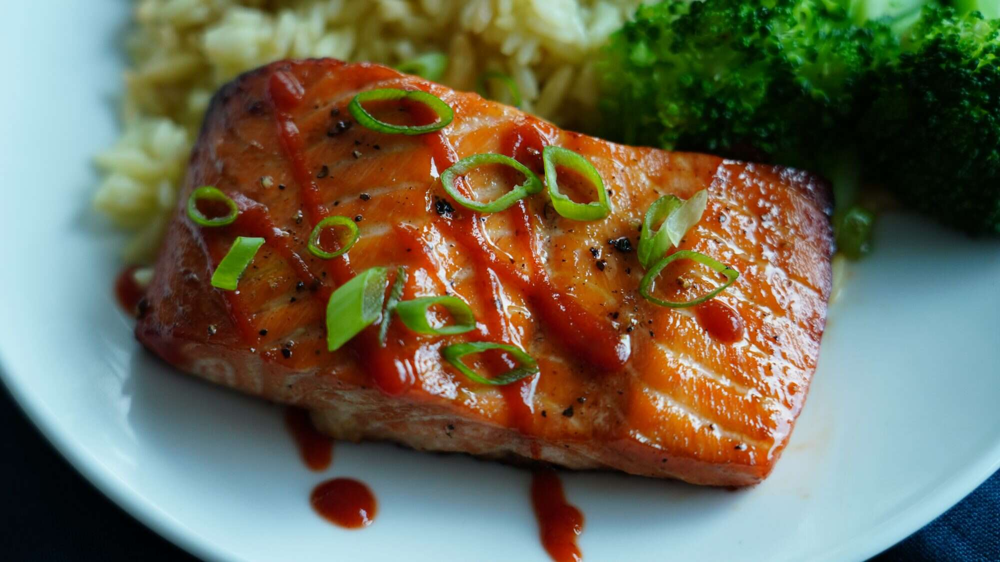

Fried Salmon
You need:
- ⅓ cup mayonnaise
- 3 tablespoons sweet chili sauce
- 1 tablespoon Sriracha sauce
- 4 salmon fillets
- cooking spray
- 1 tablespoon thinly sliced green onion, or to taste
- Preheat an air fryer to 200 degrees C.
- Prepare sauce by whisking mayonnaise, chili sauce, and Sriracha together in a small bowl until well blended.
- Spread 1 tablespoon sauce over the top of each salmon fillet. Reserve remaining sauce for serving.
- Lightly coat the air fryer basket with cooking spray. Place fillets in the air fryer basket with the sauce facing up.
- Air-fry until salmon flakes easily with a fork, about 10 minutes.
- To serve, drizzle salmon with extra sauce and sprinkle green onion over top.
Go back.